Теоретический материал
Работы с Total Commander
Скачать приложение можно по ссылке или на официальном сайте.
Total Commander - это файловый менеджер. Помимо работы с файлами, используется в качестве FTP-клиента.
Начало работы Total Commander
Главное окно программы выглядит следующим образом. По бокам расположены директории. Диск, с которым вы хотите работать, можно выбрать из выпадающего списка над директорией. Перейти в нужную папку можно обычным способом, как в обычном проводнике (два раза нажать на папку) или ввести путь вручную в поле ввода ниже.
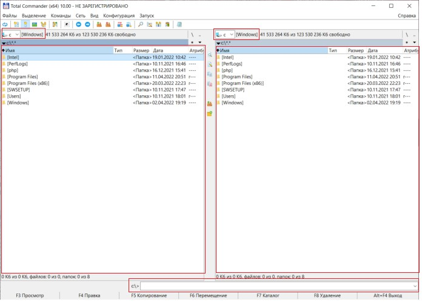Чтобы вернуться в предыдущую папку, необходимо два раза нажать на стрелку вверху директории.
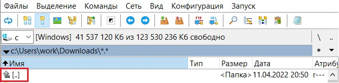Так же перемещаться по директориям можно с помощью стрелок главного меню.
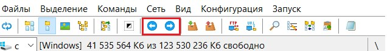Работа с файлами
- Для работы с файлами используются следующие стандартные команды:
- Просмотр - открыть файл
- Правка- изменить название файла
- Копирование - скопировать файл
- Перемещение - переместить файл
- Каталог - создать папку
- Удаление - удалить файл
- Осуществить эти операции можно двумя различными способами:
- Вариант 1.
- Ctrl+C - копировать файл
- Ctrl+V - вставить файл
- Delete - удалить файл
- Вариант 2.
Использовать горячие клавиши. Их перечень и интерпретация представлен внизу экрана. Необходимо нажать клавишу на клавиатуре, затем кликнуть мышкой на сам файл. В случае, если команда не сработала, используйте сочетание Fn+[горячая клавиша].
- Total Commander поддерживает стандартные сочетания горячих клавиш:
Так же скопировать файл можно, «перетащив» его из одной директории в другую и открыть двойным кликом мыши.
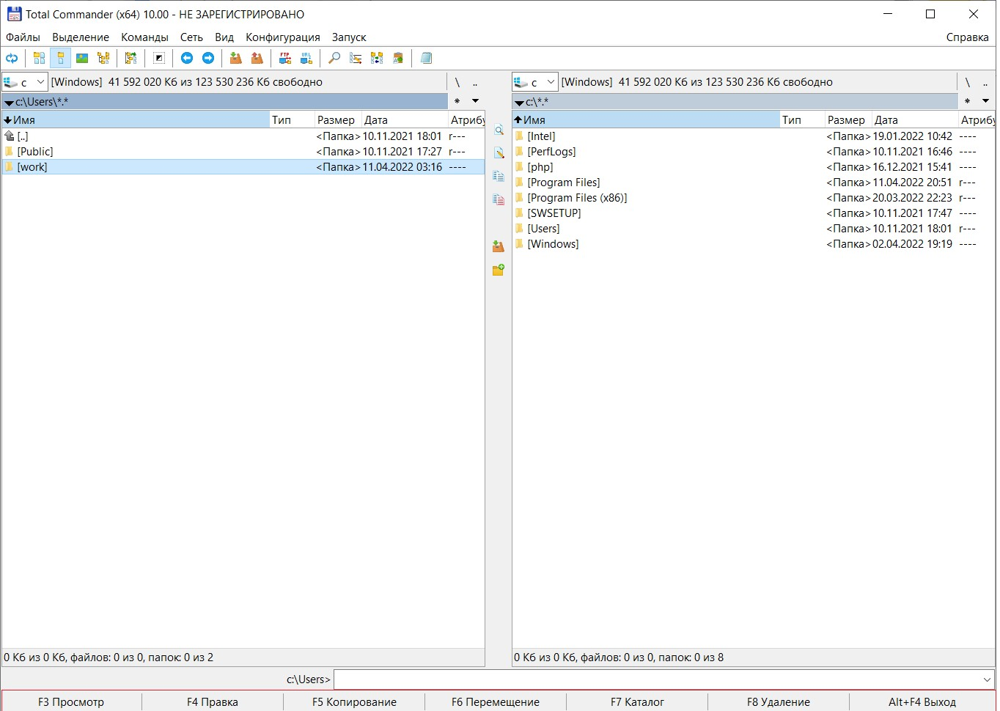Кликнуть левой кнопкой мыши на файл, а затем выбрать действие в панели меню между директориями.
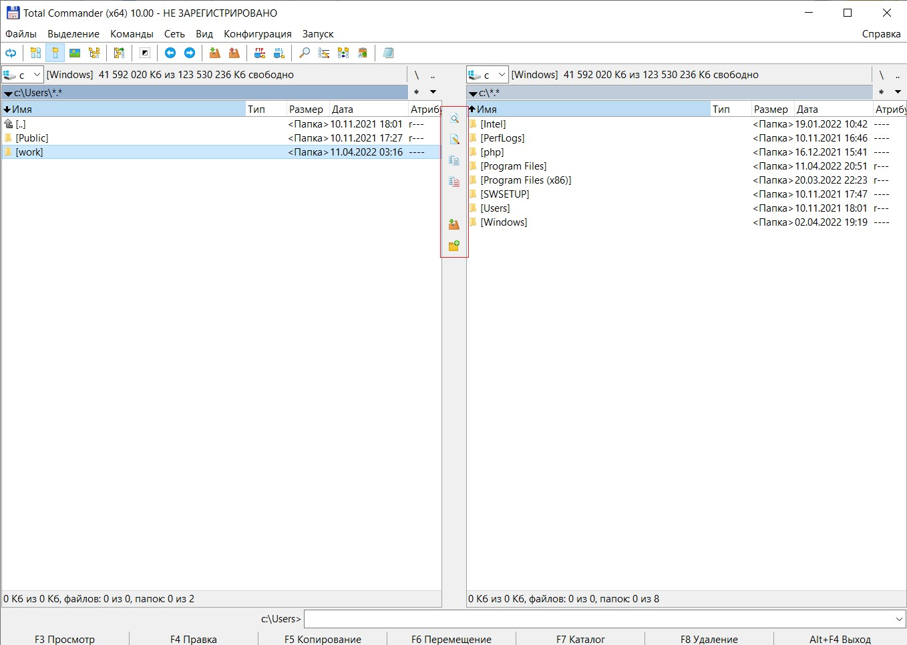Использование Total Commander в качестве FTP-клиента
FTP-клиент FTP — File Transfer Protocol (Протокол передачи файлов) — Компьютерная программа для упрощения доступа к FTP серверу.
Для использования Total Commander в качестве FTP-клиента, следует в главном меню выбрать Сеть -> Новое FTP-соединение или нажать сочетание клавиш Ctrl+N.

Ввести адрес сервера и убрать галочки напротив «Анонимное соединение» и «Использовать брандмауэр или прокси-сервер». Затем нажать «ОК».
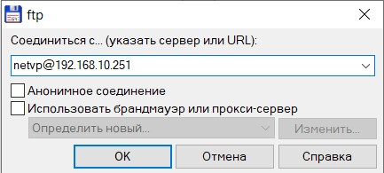В открывшемся окне ввести пароль и нажать «ОК».
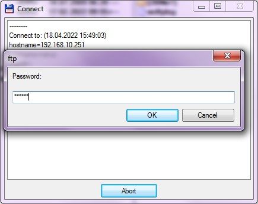Если пароль указан верно, то в поле слева откроется главная директория FTP-сервера.
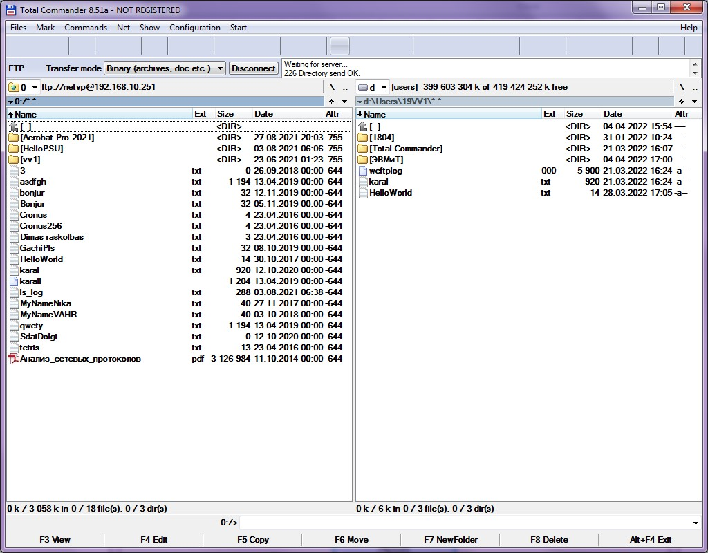Чтобы отключиться от сервера необходимо нажать на кнопку «Отключиться» или «Disconnect».
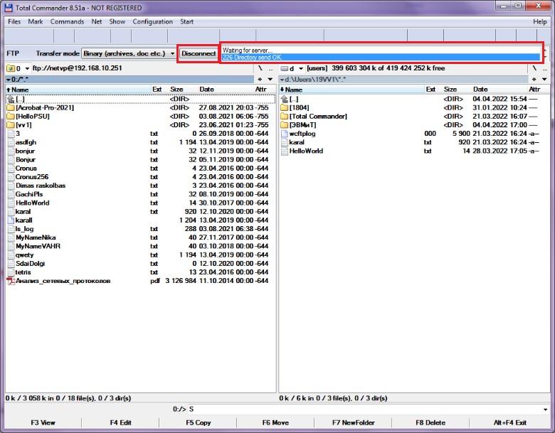При нажатии на поле в правом верхнем углу, открываются запросы от клиента к серверу и ответы сервера клиенту. Запросы отображаются не полностью, поэтому для более удобной их интерпретации рекомендуется дополнительно запустить Capture в Network Monitor.
Так выглядят запросы в Total Commander.
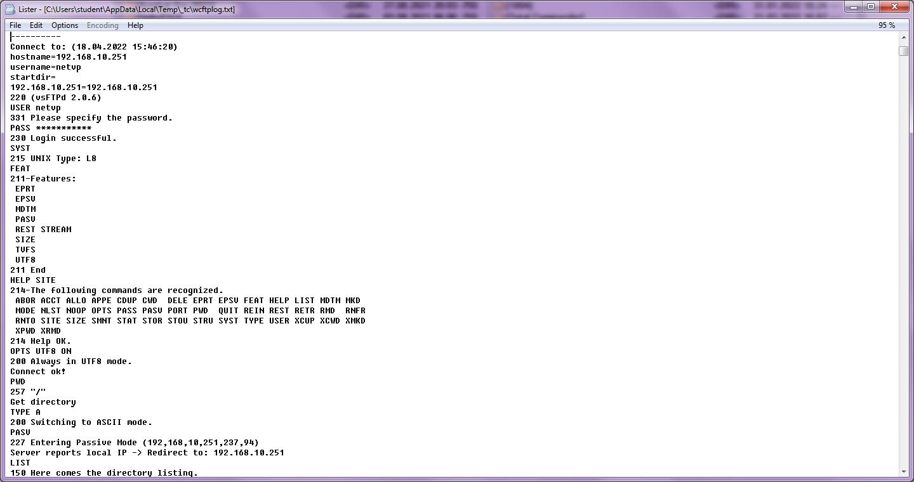А так в Network Monitor.
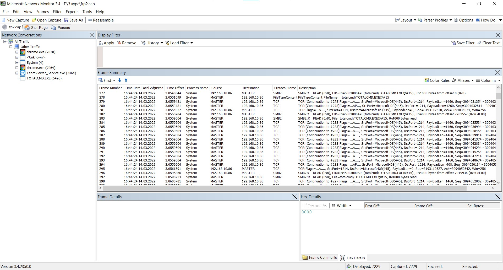Так же в программе есть возможность сохранять и повторно заходить на FTP-сервер. Для этого необходимо в главном меню выбрать Сеть -> Соединиться с FTP-сервером или нажать сочетание клавиш Ctrl+F.
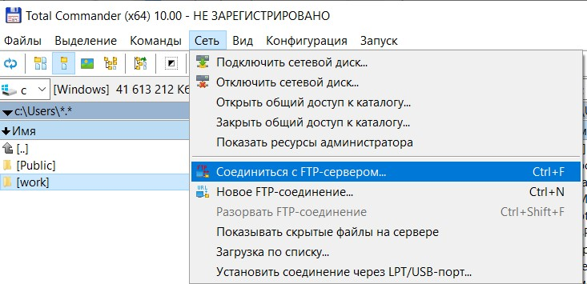В открывшемся окне выбрать последующие действия с сервером.

Копирование, удаление и перемещение файлов с сервера и на сервер осуществляется аналогично файлам из директорий на ПК.